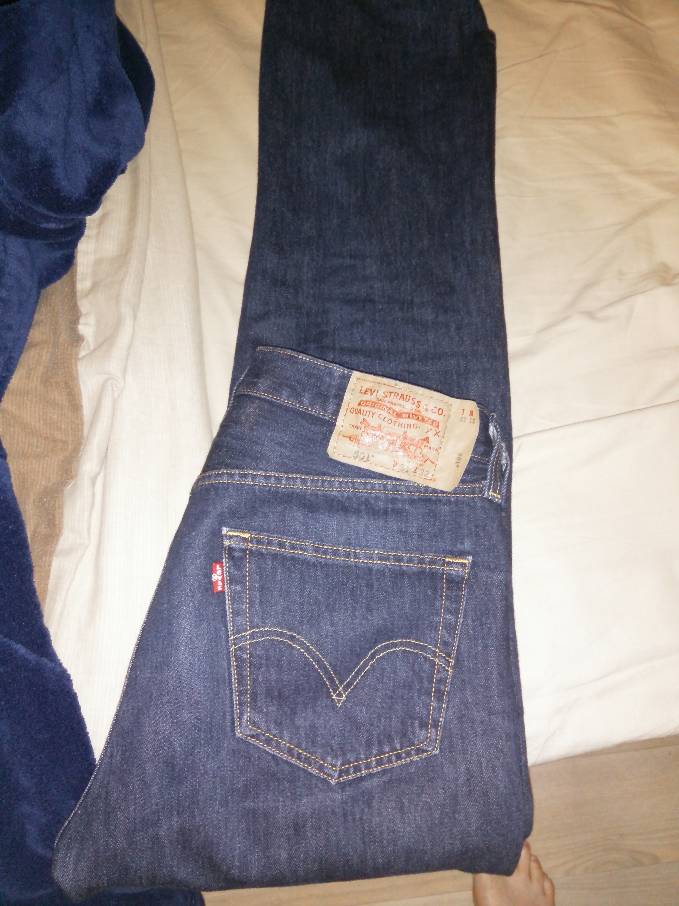

Choix pantalons
jean LEVIS 501, bleu (44/42)
jean offert par une grenouille magique un soir de pleine lune.
Appréciations :
- générale : 5/5
- couleur : 5/5
- taille hanche : 5/5
- taille jambe : 5/5
Porté 18 fois, la derniere fois était il y à 16 jours.
Acheté chez celio le 26/05/2012 (il y à 4 ans) à 42,50 €